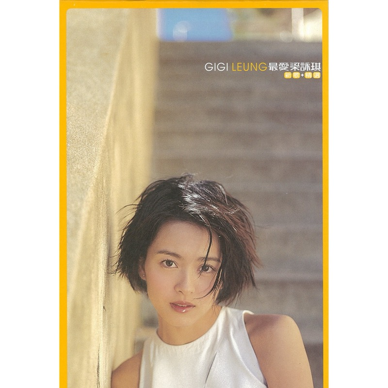

Gigi Leung
最爱梁咏琪 新歌+精选
国语新歌+精选 · 16 首
这是一张合辑：梁咏琪的第一张国语“新歌+精选”，2000 年 6 月发行。前面是三首新歌，后面十三首是从她 1997–1999 年的四张国语专辑《短发》《洗脸》《梁咏琪》《新鲜》里挑出来的。所以它等于把她在台湾、在国语市场的头三年一次收齐了：短发、高挑、清爽，《短发》《口香糖》《胆小鬼》《洗脸》这些歌，正是那个“高妹”形象最鲜明的时候。上大学时借同寝室室友的 CD 听的就是它；多年后再放，好像又回到了年轻的时候。
歌词
Tracks
- 01当我爱上你4:09
曲、词 郑华娟 · 编 Terence Teo · 监制 李偲菘
新歌，拿来开场。郑华娟一个人包办词曲，还是李偲菘监制，和前几年那些国语主打一脉相承。
- 02胆小鬼4:21
曲 李偲菘 · 词 郑淑妃 · 编 吴庆隆 · 监制 李偲菘
出自 1998 年的《梁咏琪 Gigi》，是那张专辑在香港的第一主打，903 榜最高第 3 名。李偲菘作曲并监制，郑淑妃填词，她也是《短发》的词作者。
- 03短发4:41
曲 陈国华 · 词 郑淑妃 · 编 Terence Teo · 监制 李偲菘
国语首张《短发》（1997）的第一主打，也是电影《爱情无限 Touch》的主题曲。歌名后来几乎成了她本人的代名词。
- 04中意他2:53
曲 Eric Kwok · 词 陈镇川 · 编、监制 Snowman
出自 1999 年的《新鲜》，全碟最短，不到三分钟。Eric Kwok 作曲，Snowman 编曲监制；附赠的 VCD 里也收了它的 MV。
- 05我只在乎你3:30
曲 三木刚 · 词 慎芝 · 编 许华强 · 监制 李偲菘
邓丽君的名曲，日文原曲是《时の流れに身をまかせ》。她把它放在国语首张《短发》的最后一首。
- 06口香糖3:18
曲 彭学斌 · 词 许常德 · 编 钱幽兰 · 监制 黄国伦
《短发》（1997）的第二主打，黄国伦监制。国际版还加收了它的舞曲混音。
- 07爱能不能戒4:44
曲 李偲菘 · 词 吴庆康 · 编 吴庆隆 · 监制 李偲菘
出自第二张国语专辑《洗脸》（1997）。还是李偲菘作曲、监制，把情歌写成“戒不戒得掉”的问题。
- 08你是她的3:57
曲 辛葆琏 · 词 郑淑妃 · 编 何国杰 · 监制 李偲菘
出自《洗脸》（1997），紧跟在同名主打后面的第二首。辛葆琏作曲，何国杰编曲，郑淑妃填词。
- 09爱的代价4:16
曲、词 李宗盛 · 编 梁伯君 · 监制 李偲菘
新录，翻唱李宗盛写、张艾嘉原唱的名曲。和《我只在乎你》一样，是她唱前辈的歌。
- 10我的方式3:36
曲 冯颖琪 · 词 陈少琪 · 编、监制 陈光荣
新歌，其实是她 2000 年粤语专辑《好时辰》里《Cover Girl》的国语版。VCD 也收了 MV。
- 11洗脸4:34
曲 李偲菘、李伟菘、杨剑威 · 词 施立、陈泽杉 · 编 吴庆隆 · 监制 李偲菘
《洗脸》（1997）的同名主打，香港派台的第一主打。李偲菘、李伟菘兄弟一起写的曲。
- 12Rainy Day3:25
曲 Volker Hinkel、Peter Freudenthaler · 词 谢明训 · 编 Terence Teo
改编自德国乐队 Fool's Garden 的 Rainy Day，填上国语词，出自《梁咏琪 Gigi》（1998）。
- 13简单生活3:18
曲、词 吴旭文 · 编、监制 陈伟
出自《梁咏琪 Gigi》（1998）。吴旭文一人包办词曲；附赠 VCD 的第一支 MV 就是它。
- 14有时候4:11
曲 陈小霞 · 词 姚若龙 · 编 涂惠元 · 监制 马毓芬
出自《洗脸》（1997），在香港是第二主打。陈小霞、姚若龙这对词曲组合，也写了最后一首《很高兴》。
- 15Spaghetti3:39
曲 黄韦皓 · 词 王中言 · 编 钟兴民 · 监制 黄韦皓
《梁咏琪 Gigi》（1998）的开篇第一首，黄韦皓作曲并监制，歌名就叫“意大利面”。
- 16很高兴4:54
曲 陈小霞 · 词 姚若龙 · 编 钟兴民 · 监制 张洪量
出自《梁咏琪 Gigi》（1998），张洪量监制。全碟最长的一首，放在最后收尾，和第 14 首《有时候》出自同一组词曲作者。
Credits
- 监制：李偲菘（多数曲目）· 黄国伦 · 马毓芬 · 张洪量 · 陈伟 · 陈光荣 · Snowman · 黄韦皓
- 原专辑：《短发》1997.03 · 《洗脸》1997.09 · 《梁咏琪 Gigi》1998.06 · 《新鲜》1999.07
- 新歌：当我爱上你 · 爱的代价 · 我的方式 · 原版附 VCD，收 6 首 MV
Notes
这是合辑吗
是。封面上就印着“新歌+精选”。16 首里有 13 首是旧作：《短发》3 首（短发、我只在乎你、口香糖），《洗脸》4 首（爱能不能戒、你是她的、洗脸、有时候），《梁咏琪》5 首（胆小鬼、Rainy Day、简单生活、Spaghetti、很高兴），《新鲜》1 首（中意他）。另外 3 首是新录的：当我爱上你、爱的代价、我的方式。国语专辑里取得最多的是 1998 年那张同名的《梁咏琪》，也就是有《胆小鬼》的那张。
那时的梁咏琪
她 1993 年前后被星探发掘，先做模特，1995 年和刘德华合演《烈火战车》，拿到香港电影金像奖新演员提名。1996 年 11 月以粤语专辑《爱自己》出道当歌手，1997 年 3 月在台湾出第一张国语专辑《短发》，之后差不多每年粤、国语各一两张。到 2000 年这张精选出来时，她出道才三四年，是歌、影两边都最红的时候：1999 年主演电影《心动》，粤语《远在天边》也成了代表作。这张精选相当于给她的国语“短发时期”做了一次总结。
在她演艺生涯里的位置
这张之后，她的国语专辑还有 2001 年的《Amour》等，但“短发、高妹、清爽”的形象，主要就是 1997–1999 这几张国语唱片建立起来的，这张精选把它们收在了一起。之后她又演了《向左走·向右走》（2003，片中歌曲获金马奖最佳原创电影歌曲），2008 年加盟美亚，2011 年在伊维萨岛结婚，2015 年生女儿，2019 年加盟环球，2023 年起重新开大型演唱会。二十多年过去，舞台上的她已经换了模样；这张 CD 留住的，是封面上那个高高瘦瘦、一头短发的女孩。